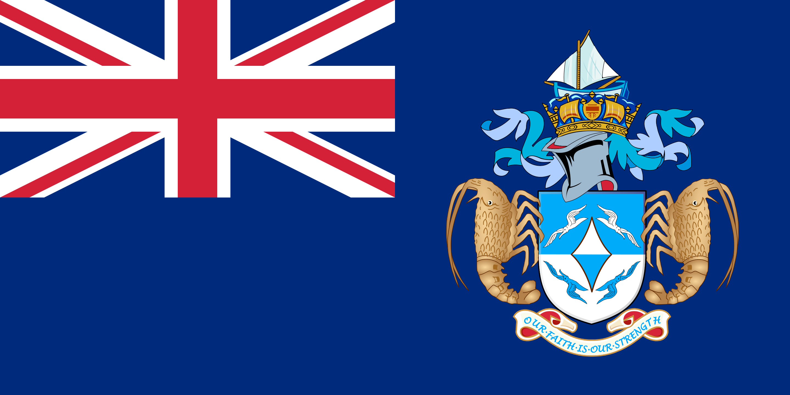

Our Faith is Our Strength
Geography
Edinburgh of the Seven seas - is the only settlement that is placed at the constituent part of the British Overseas Territory of Saint Helena, Ascension and Tristan da Cunha.
The territory consists of the inhabited island Tristan da Cunha, which has a diameter of roughly 11 kilometers and an area of 98 square kilometers.
As of October 2018, the main island had 250 permanent inhabitants, who all hold British Overseas Territories citizenship.
Political system
There are no political parties or trade unions on Tristan. Executive authority is vested in the King, who is represented in the territory by the governor of Tristan da Cunha.
Tristan da Cunha was a dependency of Saint Helena, and therefore directly represented by the governor of Saint Helena up until 2009.
The Island Council is made up of eight elected and three appointed members, who serve a three-year term beginning in February or March.



Flora and Fauna
Many of the flora and fauna of the archipelago have a broad circumpolar distribution in the South Atlantic and South Pacific Oceans.
Tristan is primarily known for its wildlife. The island has been identified as an Important Bird Area by BirdLife International because there are 13 known species of breeding seabirds on the island and two species of resident land birds.
Various species of whales and dolphins can be seen around Tristan from time to time with increasing sighting rates, although recovery of baleen whales, especially the southern right whale, were severely hindered by illegal whaling by the Soviet Union in the aftermath of the 1960 volcanic eruption.
Historical places
St. Joseph Church is a Roman Catholic church and the most isolated Roman Catholic Parish in the world. Originally the site of chapel, it was replaced by the church in the 1990s.
St. Mary's Church is a religious building belonging to the Church of England. The church was built in 1923, under the direction of Rev. Martin Rogers. It was opened in July of that year. In 1990 the church was renovated and extended.